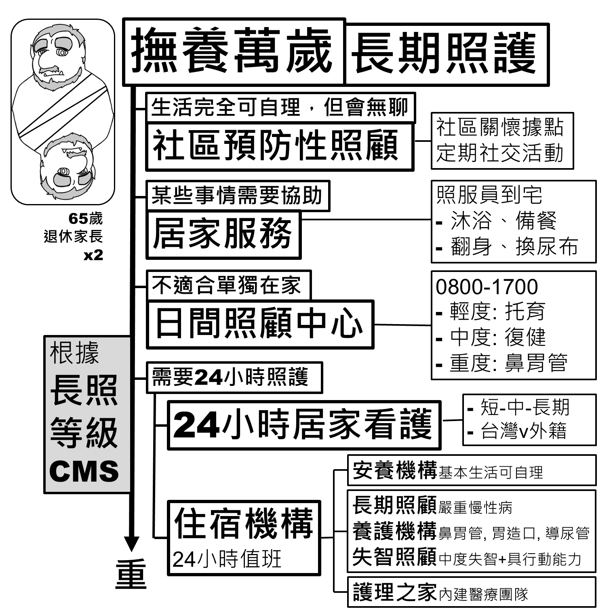
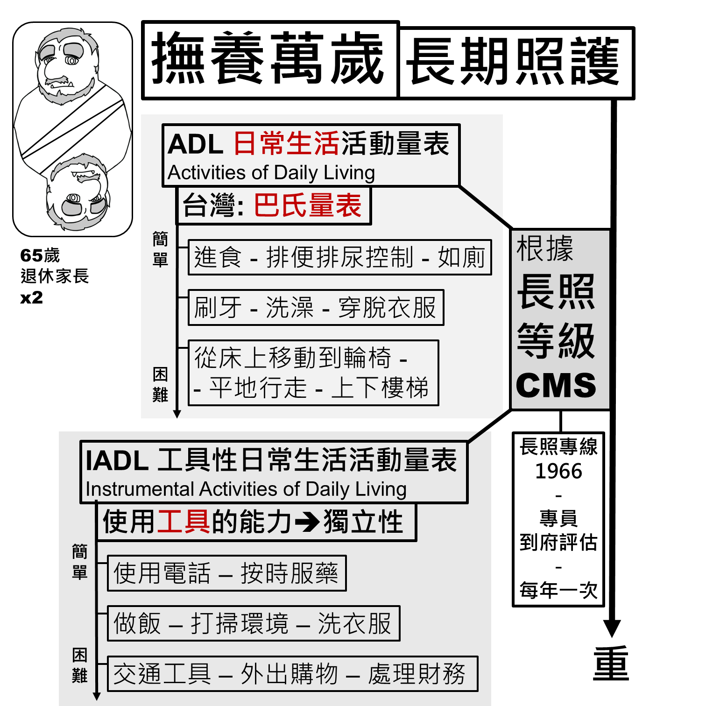
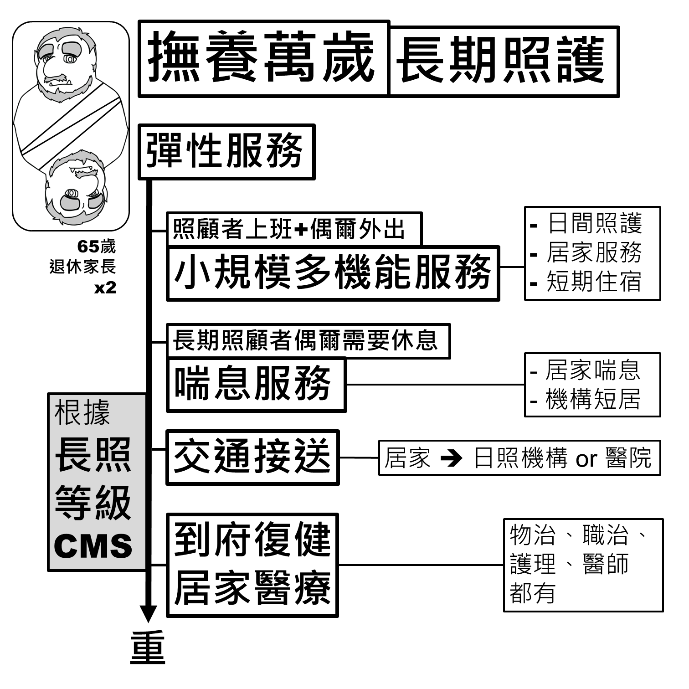
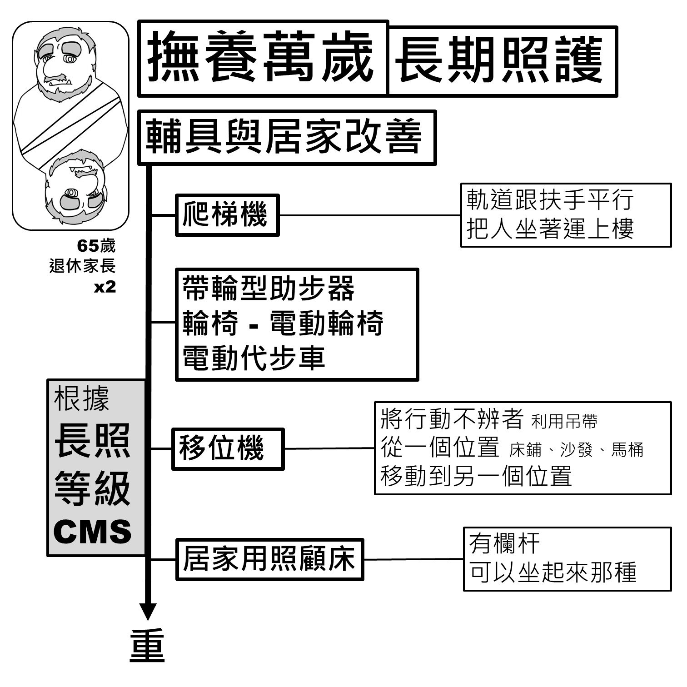
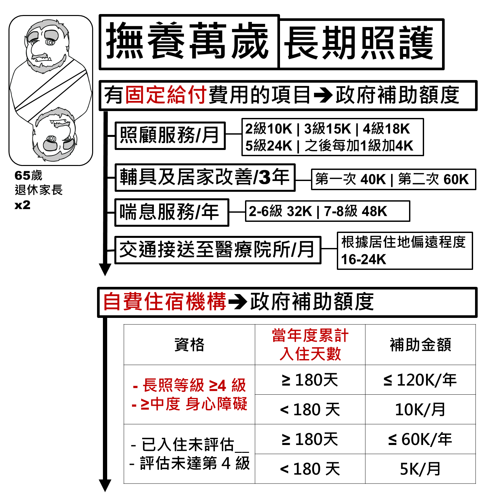
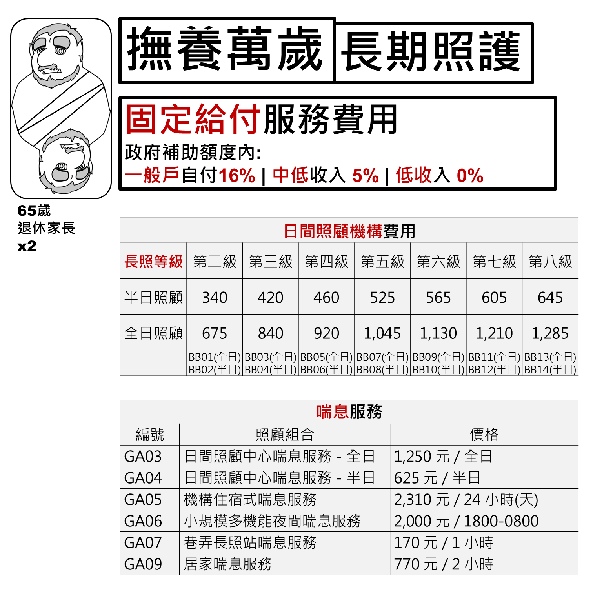
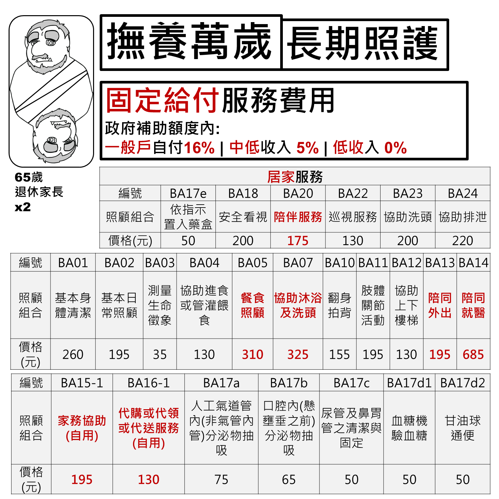
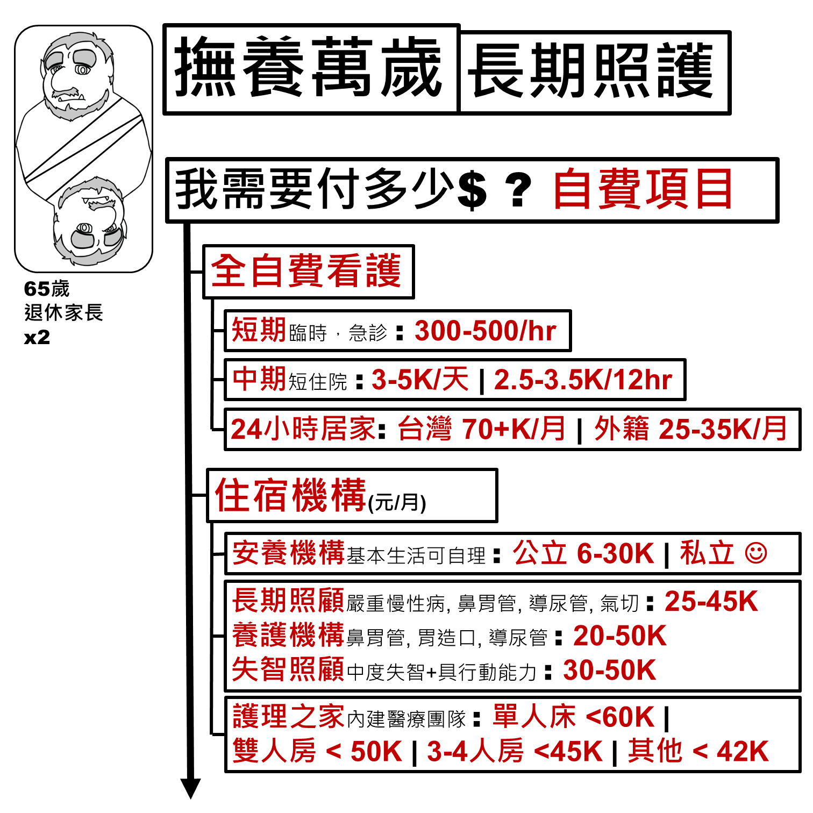

長照等級判斷
長照服務會依照「長照等級（CMS）」與失能／失智程度提供不同服務，等級越重、可用資源越多。判定方式可以參考：
💡 若不確定自己或家人的長照等級，可撥打 長照專線 1966，會有專員到府評估，之後每年重新評估一次。
服務型態總覽
依照生活自理程度與是否需要 24 小時照護，長照服務大致分為：社區預防性照顧、居家服務、日間照顧中心、24 小時居家看護、住宿機構。

ADL / IADL 評估表
台灣採用「巴氏量表」評估日常生活活動能力（ADL）與工具性日常生活活動能力（IADL），作為長照等級判定的依據之一。

長照機構名單
依照需求的輕重與是否需要住宿，可以參考以下政府整理的名單與地圖：
輔助服務
除了照顧服務本身，長照 2.0 也提供交通接送、輔具與居家改善、喘息服務等輔助性服務：
彈性服務
針對照顧者仍需上班、偶爾需要外出或休息的情況，長照也提供小規模多機能服務、喘息服務、交通接送、到府復健／居家醫療等彈性選項。

輔具與居家改善
常見的輔具包括爬梯機、帶輪型助步器／輪椅／電動代步車、移位機、居家用照顧床等，可以搭配長照等級申請補助。

長照服務費用 & 補助
各項長照服務的政府給付與補助金額，以及自費住宿機構的補助資格，可以參考衛福部資料：
固定給付項目與補助額度
照顧服務、輔具及居家改善、喘息服務、交通接送等都有固定的政府補助額度；一般戶自付 16%，中低收入自付 5%，低收入戶則免自付。自費住宿機構也有依長照等級與入住天數計算的補助。


居家服務價格表
居家服務依項目計價，例如基本身體清潔、協助沐浴及洗頭、陪同外出、陪同就醫等，各有固定價格（一般戶僅需自付其中 16%）。

如果全部自費，大概要多少錢？
如果超出政府補助範圍、或是選擇全自費照護，大致的市場行情如下：
| 類型 | 細項 | 費用 |
|---|---|---|
| 全自費看護 | 短期臨時／急診 | 300–500 元/小時 |
| 中期短住院 | 3,000–5,000 元/天（或 2,500–3,500 元/12hr） | |
| 24 小時居家看護 | 台灣籍 70K+ 元/月；外籍 25K–35K 元/月 | |
| 住宿機構 | 安養機構（可自理） | 公立 6K–30K；私立視設施而定 |
| 長期照顧 / 養護機構（鼻胃管、導尿管等） | 20K–50K 元/月 | |
| 失智照顧（中度失智＋具行動能力） | 30K–50K 元/月 | |
| 護理之家（內建醫療團隊） | 單人房 <60K；雙人房 <50K；3–4人房 <45K |

💡 以上費用僅為市場行情區間，實際金額會因地區、機構與個人需求而有差異，申請前建議直接向機構或長照專線 1966 確認最新資訊。